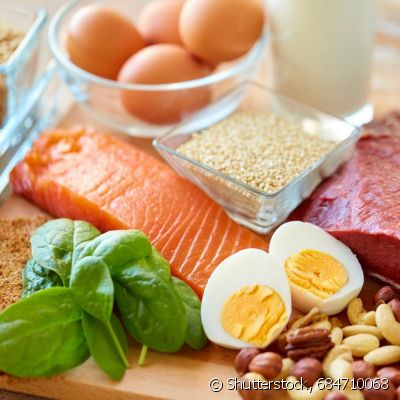

Proteínas
As proteínas são nutrientes necessários para o organismo produzir partes essenciais do corpo, como:
Além disso, as proteínas foram os neurotransmissores, que são os responsáveis por transmitir os impulsos nervosos que formam os pensamentos e os comandos físicos para o corpo se movimentar.
Que podem ser encontradas em alimentos como carnes, peixes, ovos e derivados do leite, além de existir em alimentos de origem vegetal, como soja, feijão, amendoim, gergelim e lentilha.
